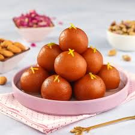

Gulab Jamun:

Serves: 4–5
Ingredients:
- 1 cup milk powder
- 1/4 cup all-purpose flour
- 2 tbsp ghee
- 1/4 tsp baking soda
- 2–3 tbsp milk (to knead)
- Adequete Oil/ghee for frying
- Sugar Syrup:
- 1.5 cups sugar
- 1.5 cups water
- 2–3 crushed cardamoms
- i tsp rose water
- Few saffron strands (optional)
Steps:
- Syrup: Boil sugar + water + cardamom for 10 mins. Add rose water. Keep warm.
- Dough: Mix milk powder, flour, soda, ghee. Add milk gradually to form a soft dough.
- Make balls out of the dough and deep fry them (or) Air fry them until golden brown
- Soaking: Add hot balls to warm syrup. Let soak for 2+ hours.
- Serve it warm with a scoop of vanilla icecream.